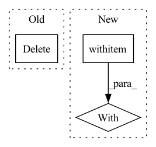

Pattern ID :20830
Before Change
train_datapoint[3].to(device), train_datapoint[4].to(device))
train_losses_this_epoch.append(float(train_loss))
scaler.scale(train_loss).backward()
del train_loss
grad_accum += 1
if grad_accum % gradient_accumulation == 0:
grad_accum = 0
step_counter += 1After Change
scaler.update()
scheduler.step()
else:
with autocast ():
if not use_speaker_embedding:
train_loss = net(train_datapoint[0].to(device), train_datapoint[1].to(device), train_datapoint[2].to(device),
train_datapoint[3].to(device))
else:In pattern: SUPERPATTERN
Frequency: 5
Non-data size: 3
Instances Fragment ID: 67130436
Project Name: digitalphonetics/ims-toucan
Commit Name: 99f87066428aae36c4c4d8dc82298e08d325ee85
Time: 2021-06-29
Author: florian.lux@ims.uni-stuttgart.de
File Name: TransformerTTS/transformer_tts_train_loop.py
M Class Name: AnonimousClass
N Class Name: AnonimousClass
M Method Name: train_loop(14)
N Method Name: train_loop(14)
M Parent Class:
N Parent Class:
M File Name: TransformerTTS/transformer_tts_train_loop.py
N File Name: TransformerTTS/transformer_tts_train_loop.py
M Start Line: 163
M End Line: 223
N Start Line: 144
N End Line: 217
Before Change
)
if correct_res:
continue
del f[rescaled_name]
print("Resizing", pp, name)
print("from resolution (microns)", native_resolution, "to", target_resolution)
print("with scale factor", scale_factor)After Change
// check if anything needs to be resized
need_resize = []
for pp in paths:
with open_file (pp, "r") as f:
for name, obj in f.items():
rescaled_name = f"rescaled/{name}"
if is_group(obj):
continue Fragment ID: 67130437
Project Name: constantinpape/torch-em
Commit Name: 3cf0d33425e065fd543a9e7b9727786d953229c6
Time: 2022-03-19
Author: constantin.pape@embl.de
File Name: torch_em/data/datasets/plantseg.py
M Class Name: AnonimousClass
N Class Name: AnonimousClass
M Method Name: _resize(3)
N Method Name: _resize(3)
M Parent Class:
N Parent Class:
M File Name: torch_em/data/datasets/plantseg.py
N File Name: torch_em/data/datasets/plantseg.py
M Start Line: 44
M End Line: 61
N Start Line: 44
N End Line: 69
Before Change
valid_losses.append(loss.item())
del src_input
del trg_input
del trg_output
del e_mask
del s_mask
del outputAfter Change
valid_losses = []
start_time = datetime.datetime.now()
with torch .no_grad():
for i, batch in tqdm(enumerate(self.valid_loader)):
src_input, trg_input, trg_output = batch
src_input, trg_input, trg_output = src_input.to(device), trg_input.to(device), trg_output.to(device)
Fragment ID: 67130438
Project Name: devjwsong/transformer-translator-pytorch
Commit Name: e266563e6186a244b45c6c0ec4edcc9c48e5a46f
Time: 2020-07-24
Author: enflwodn@gmail.com
File Name: src/main.py
M Class Name: Manager
N Class Name: Manager
M Method Name: validation(1)
N Method Name: validation(1)
M Parent Class:
N Parent Class:
M File Name: src/main.py
N File Name: src/main.py
M Start Line: 142
M End Line: 167
N Start Line: 136
N End Line: 156
Before Change
train_datapoint[4].to(device), train_datapoint[5].to(device), train_datapoint[6].to(device), train_datapoint[7].to(device))
train_losses_this_epoch.append(float(train_loss))
(train_loss / gradient_accumulation).backward()
del train_loss
grad_accum += 1
if grad_accum % gradient_accumulation == 0:
grad_accum = 0
step_counter += 1After Change
scaler.update()
scheduler.step()
else:
with autocast ():
if not use_speaker_embedding:
train_loss = net(train_datapoint[0].to(device), train_datapoint[1].to(device), train_datapoint[2].to(device),
train_datapoint[3].to(device), train_datapoint[4].to(device), train_datapoint[5].to(device),
train_datapoint[6].to(device)) Fragment ID: 67130439
Project Name: digitalphonetics/ims-toucan
Commit Name: 99f87066428aae36c4c4d8dc82298e08d325ee85
Time: 2021-06-29
Author: florian.lux@ims.uni-stuttgart.de
File Name: FastSpeech2/fastspeech2_train_loop.py
M Class Name: AnonimousClass
N Class Name: AnonimousClass
M Method Name: train_loop(14)
N Method Name: train_loop(14)
M Parent Class:
N Parent Class:
M File Name: FastSpeech2/fastspeech2_train_loop.py
N File Name: FastSpeech2/fastspeech2_train_loop.py
M Start Line: 135
M End Line: 198
N Start Line: 116
N End Line: 195
Before Change
assert_(data2.dtype.byteorder in ("<", "=", "|"), msg=data2.dtype)
assert_array_equal(data, data2)
del data2
finally:
if realfile:
os.unlink(tmpfile)
After Change
if realfile:
data2[0] = 0
else:
with pytest .raises(ValueError, match="read-only"):
data2[0] = 0
def test_write_roundtrip(tmpdir): Fragment ID: 67130442
Project Name: scipy/scipy
Commit Name: dc0bb8bcc7da028f601bb52a8ebac45b5c502250
Time: 2020-07-06
Author: larson.eric.d@gmail.com
File Name: scipy/io/tests/test_wavfile.py
M Class Name: AnonimousClass
N Class Name: AnonimousClass
M Method Name: _check_roundtrip(5)
N Method Name: _check_roundtrip(4)
M Parent Class:
N Parent Class:
M File Name: scipy/io/tests/test_wavfile.py
N File Name: scipy/io/tests/test_wavfile.py
M Start Line: 150
M End Line: 178
N Start Line: 147
N End Line: 176